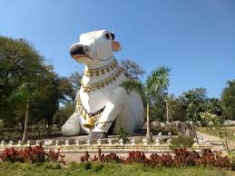

Mahanandi Temple
The Mahanandi Temple is a famous Hindu temple located in the Nallamala Hills near Nandyal, in the Kurnool district of Andhra Pradesh, India. It is known for its ancient architecture and the nine Nandis that are found within a radius of 15 km from Mahanandi village. The temple is also famous for its freshwater pools called Kalyani or Pushkarini.
Location: Mahanandi, Kurnool District, Andhra Pradesh, India
Activities: Spiritual visits, rituals, festivals, and temple tours
Transportation: Accessible by road from Nandyal and Kurnool. Regular buses and taxis are available.